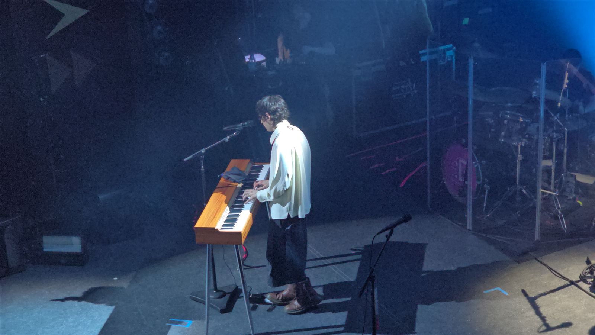

I Danmark kender vi det: salget åbner kl. 10, du sidder klar med kortet, køen tæller ned, og efter tyve minutter er det udsolgt. Frustrerende, men man forstår reglerne.
Første gang jeg prøvede at få en billet til en koncert, mens jeg boede i Nagoya, forstod jeg ingenting. Der var ingen kø og ingen "køb nu"-knap. Der var en ansøgningsperiode, en dato for resultatet og et krav om fanklub-medlemskab.
Jeg har været så heldig at komme til mange koncerter i Japan og har oplevet det indefra: vundet (og tabt) diverse lotterier og set, hvor stor forskellen på koncertkulturen er. Der er næsten ingen telefoner i luften, publikum synger ikke med, og alle pladser, også ståpladserne, er tildelt på forhånd (med mindre man tager til de helt små spillesteder).
Uanset om det var One Ok Rock i Nagoya Dome, Survive Said The Prophet på et lille lokalt spillested eller Good Grief i min lokale klub, er live-verdenen noget helt andet, og jeg har langt større respekt for den, end for hvordan vi gør det i Vesten. Det første, jeg gjorde, da jeg landede i Japan, var faktisk at tage lyntoget fra Nagoya (min nye hjemby) til Yokohama for at høre My First Story live.
Det lyder bureaukratisk, og det er det også. Men når man først kender logikken bag, giver det mening.
Hvorfor kan man ikke bare købe en billet?
Til større koncerter sælges billetterne i runder:
- Fanklub-salget. Den første runde er næsten altid kun for kunstnerens fanklub.
- Forsalget, senkō (先行). Derefter kommer forsalg via kunstnerens app, pladeselskabet eller et betalingskort.
- Det almindelige salg, ippan hatsubai (一般発売). Først til sidst åbner det for alle, og her er det "først til mølle" som herhjemme. Til de mest populære navne er der ofte ikke meget, hvis noget tilbage, når man kommer dertil.
De fleste af de tidlige runder foregår ved lodtrækning, chūsen (抽選). Du tilmelder dig i en periode, vælger dato og antal billetter og får svar en uge eller to senere. Det er ligegyldigt, om du søgte det første minut eller den sidste dag.
Billetsiden e+ (イープラス) beskriver det selv som to måder at søge på: purēdā (プレオーダー), som er lodtrækning, og senchaku hanbai (先着販売), som er først til mølle.
Du har vundet. Nu skal du betale, hurtigt
Vinder du, har du typisk kun få dage til at betale. Mange betaler i en convenience store med en kode fra ansøgningen. Hos e+ finder du både fristen og betalingsnummeret i din ansøgningshistorik. Betaler du ikke til tiden, mister du billetten, og den går videre til en anden.
Prisen er til at overkomme: de fleste koncerter koster mellem 4.000 og 10.000 yen, altså cirka 170 til 420 kr.
For os udlændinge er dette ofte det første store problem. Mange fanklubber og billetsider kræver et japansk telefonnummer, en japansk adresse eller et kort, der er udstedt i Japan. Det er ikke fordi, udlændinge ikke er velkomne. Systemerne er bare bygget til dem, der bor i landet.
Du ved ikke, hvor du skal sidde
Her kom mit egentlige kulturchok. Du betaler for en billet uden at vide, hvor du sidder. Mange billetter er i dag elektroniske og ligger i en app, og pladsen bliver ofte først vist få dage før koncerten eller på selve dagen. Man åbner appen og ser, om man har fået første række eller den bageste række på stadion.

Det lyder mærkeligt, men det gør videresalg sværere. Ingen kan sælge "de gode pladser" videre, når ingen ved, hvor de gode pladser er.
Til mange koncerter, blandt andet hos e+ og lignende billetsider, står der et nummer på billetten, seiri bangō (整理番号). Det viser, hvornår du bliver lukket ind. Er koncerten kun med ståpladser, kan nummeret gøre en stor forskel: jo lavere nummer, jo tidligere kommer du ind, og jo bedre plads kan du få tæt på scenen.
Navnet på billetten er dit, og det bliver tjekket
Billetten er ofte personlig. Dit navn står på den, og ved indgangen kan personalet bede om ID, honnin kakunin (本人確認). Til nogle koncerter tager de et billede af dig ved køb eller bruger ansigtsgenkendelse ved indgangen.
Det hænger sammen med loven. Fra den 14. juni 2019 blev det forbudt at videresælge koncertbilletter til en højere pris end den, arrangøren har sat, når det sker uden arrangørens samtykke og med henblik på gentagne salg. Straffen er op til et års fængsel, en bøde på op til 1 million yen eller begge dele. Det samme gælder for den, der køber billetter for at sælge dem videre.
Loven kaldes i daglig tale chiketto fusei tenbai kinshi-hō (チケット不正転売禁止法). Den dækker billetter, hvor der står på billetten, at videresalg uden arrangørens tilladelse er forbudt, hvor dato og plads eller indehaver er angivet, og hvor køberens navn og kontaktoplysninger bliver tjekket.
Kan du ikke komme, er løsningen arrangørens egen officielle videresalgstjeneste, hvor billetten sælges videre til den normale pris. Hos e+ hedder den teika riseeru (定価リセール), altså videresalg til pålydende. Købte man en billet på en auktionsside, risikerer man at blive afvist ved døren, fordi navnet ikke passer.
Selve aftenen
Når du endelig står der, er der flere små overraskelser:
- Merch før musik. Køen til koncertens varer, buppan (物販), starter ofte flere timer før dørene åbner. Nogle står i kø længere for en t-shirt end for selve koncerten.
- Tidlig start. Mange koncerter starter omkring kl. 18 på hverdage, så folk kan nå hjem med de sidste tog.
- Stille mellem sangene. Publikum er med under sangene, men når sangen slutter, bliver der ofte helt stille, mens kunstneren taler. Det er ikke mangel på begejstring. Det er respekt.
- Ingen telefoner i luften. Til mange koncerter er det forbudt at filme, og folk overholder det.
- Du går ikke bare ud. På store arenaer bliver publikum sendt ud i blokke, kisei taijō (規制退場). Du venter på din tur, også når du bare vil hjem.
Mærkeligt, eller bare en anden logik?
Set med danske øjne virker systemet langsomt og lukket. Men prøv at vende det om. Hos os kan en billet købes for 800 kr. og sælges videre for 4.000 kr. et kvarter senere, og den, der har de hurtigste fingre eller den bedste bot, vinder. I Japan har man valgt, at held og loyalitet over for kunstneren skal betyde mere end fart og penge.
Som med så meget andet i Japan, som jeg skrev om i Kulturchok i Japan, er det mærkelige ofte bare en regel, ingen har forklaret dig.
Ofte stillede spørgsmål om koncerter i Japan
Kan jeg som turist få billetter til en koncert i Japan?
Ja, men det kræver planlægning. Nogle store kunstnere har et særligt salg for udlændinge, og nogle billetsider har en engelsk version. Mange fanklubber kræver dog japansk telefonnummer eller adresse, så tjek altid arrangørens egen side.
Hvad er chūsen?
Chūsen (抽選) betyder lodtrækning. Du søger om en billet i en periode og får svar bagefter. Det er ikke hurtighed, der afgør, om du får en billet.
Er det ulovligt at købe en videresolgt billet i Japan?
Det er ulovligt at videresælge billetter over den normale pris, og det er også ulovligt at købe dem med det formål at sælge dem videre. Samtidig kan en videresolgt billet blive afvist ved døren, hvis navnet ikke passer til dit ID. Brug arrangørens officielle videresalg.
Hvorfor ved jeg ikke, hvor jeg skal sidde?
Fordi pladserne ofte først bliver vist kort før koncerten. Det gør det sværere at sælge de gode pladser videre til høje priser.
Skal jeg have ID med til koncerten?
Ja. Tag dit pas med. Der kan være ID-kontrol ved indgangen, og navnet skal passe til billetten.
Koncert i Japan uden at gætte
Det er svært at planlægge en rejse omkring en koncert, når du ikke ved, om du får en billet, og ansøgningen er på japansk. Jeg hjælper med at finde ud af, hvordan salget foregår for netop din koncert, og bygger resten af rejsen omkring det i en Rejseplan + booking.
Nogle spørgsmål til koncerter i Japan?
Udfyld følgende, så vender jeg tilbage hurtigst muligt.
Tak! Jeg har modtaget din besked og vender tilbage hurtigst muligt.
Læs også


Kilder
- チケット高額転売が禁止に。チケット不正転売禁止法 施行, Impress Watch
- チケット不正転売禁止法が6月14日から施行, BCN+R
- ご存知ですか？「チケット不正転売禁止法」, Tokyo Metropolitan Government
- イープラス ご利用ガイド, e+
- チケット再販売サービス「定価リセール」, e+
Følg Kantan for mere om Japan